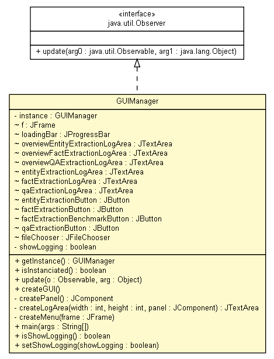

tud.iir.gui
Class GUIManager

java.lang.Object
 tud.iir.gui.GUIManager
tud.iir.gui.GUIManager
- All Implemented Interfaces:
- java.util.Observer
public class GUIManager
- extends java.lang.Object
- implements java.util.Observer
The GUIManager manages the complete layout of the WebKnox Core application.
| Methods inherited from class java.lang.Object |
clone, equals, finalize, getClass, hashCode, notify, notifyAll, toString, wait, wait, wait |
instance
private static GUIManager instance
f
javax.swing.JFrame f
loadingBar
javax.swing.JProgressBar loadingBar
overviewEntityExtractionLogArea
javax.swing.JTextArea overviewEntityExtractionLogArea
overviewFactExtractionLogArea
javax.swing.JTextArea overviewFactExtractionLogArea
overviewQAExtractionLogArea
javax.swing.JTextArea overviewQAExtractionLogArea
entityExtractionLogArea
javax.swing.JTextArea entityExtractionLogArea
factExtractionLogArea
javax.swing.JTextArea factExtractionLogArea
qaExtractionLogArea
javax.swing.JTextArea qaExtractionLogArea
entityExtractionButton
javax.swing.JButton entityExtractionButton
factExtractionButton
javax.swing.JButton factExtractionButton
factExtractionBenchmarkButton
javax.swing.JButton factExtractionBenchmarkButton
qaExtractionButton
javax.swing.JButton qaExtractionButton
fileChooser
final javax.swing.JFileChooser fileChooser
showLogging
private boolean showLogging
GUIManager
private GUIManager()
getInstance
public static GUIManager getInstance()
isInstanciated
public static boolean isInstanciated()
update
public void update(java.util.Observable o,
java.lang.Object arg)
- Get notified when the object changes.
- Specified by:
update in interface java.util.Observer
- Parameters:
o - The observable object.arg - More arguments.
createGUI
public void createGUI()
createPanel
private javax.swing.JComponent createPanel()
createLogArea
private javax.swing.JTextArea createLogArea(int width,
int height,
javax.swing.JComponent panel)
createMenu
private void createMenu(javax.swing.JFrame frame)
main
public static void main(java.lang.String[] args)
- Parameters:
args -
isShowLogging
public boolean isShowLogging()
setShowLogging
public void setShowLogging(boolean showLogging)